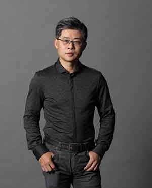

-

童雪松
南京微软云暨移动应用孵化平台顾问兼代理总经理
美国乔治华盛顿大学管理学博士，TCL创业投资有限公司董事总经理。曾担任TCL集团战略与投资管理中心总经理，历任TTE（TCL-Thomson电子）北美利润中心副总裁、TTE副总裁兼战略企划中心总经理、新兴市场业务中心副总裁。
童博士曾作为核心团队成员，参与TCL兼并法国汤姆逊的谈判和整体项目运作，特别是专利合同谈判。他还曾主导创立TCL各地基金及美元基金并成功投资西安通源石油（300164.SZ）、百视通（600637.SH）、敦泰科技(5280.TW) , 时趣，Kateeva, Wonder Workshop 等项目。
目前，童雪松博士全面负责南京微软云暨移动应用孵化平台的业务、合作伙伴关系和未来发展战略，同时带领孵化平台的服务团队为创业者提供最好最专业的服务。